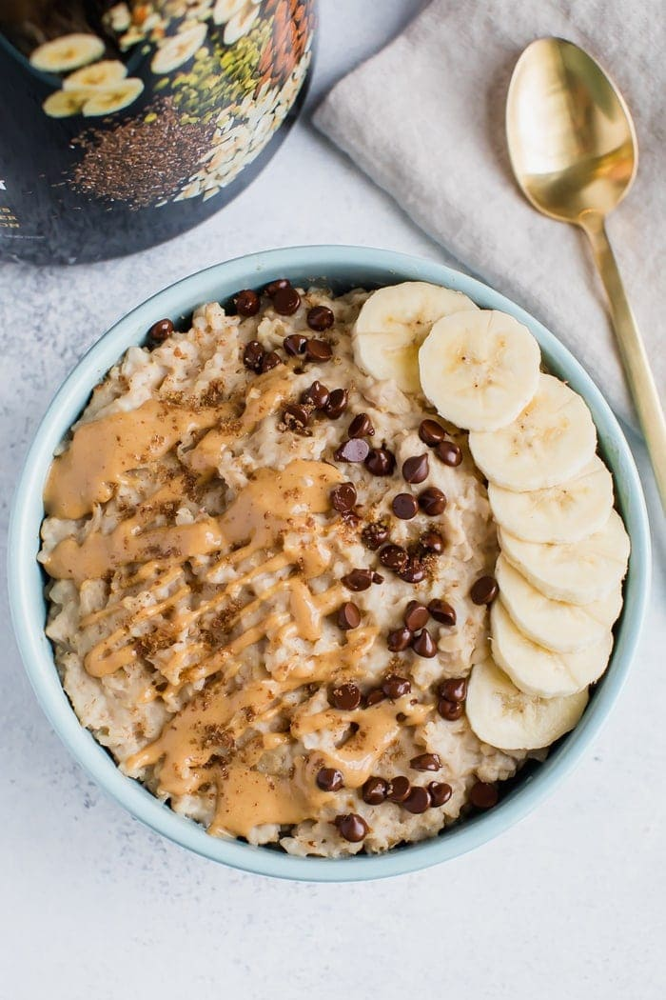

Protein Oats

A quick and easy recipe for a healthy, balanced breakfast
This meal is a great source of protein and fiber
It can also be used as a preworkout meal
Ingredients
- Rolled Oats
- Milk
- Protein Powder (any flavor)
- Toppings (peanut butter, fruits, chocolate chips)
Instructions
- To a bowl, add 100g of rolled oats with 200ml of milk
- Microwave oats and milk for a minute and 30 seconds
- Take bowl out of microwave and and add a serving of protein powder (30g)
- Mix the powder with the oats and milk
- Serve with toppings of your choice
Return to Home